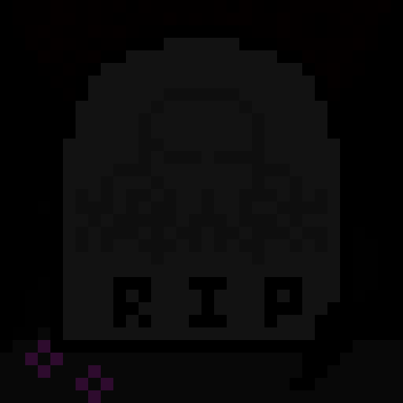

Perlenspiel Games - built in a highly constrained JavaScript micro-engine.
Language: JavaScript
Perlenspiel is a JavaScript game engine built by the famous game designer Brian Moriarty, who I was lucky enough to have as a professor for several classes at WPI. Perlenspiel games take place entirely within a grid whose maximum dimensions are 32x32 cells. Each cell can be a simple pixel, or can have a "bead", which is basically just a rectangle with a size, outline, corner radius and background. This highly constrained approach to game design forces you to find mechanics that are fun and refine those, rather than worry about fancy graphics or representing anything too complex.

Divided is the Perlenspiel game that I am most proud of. It was my final project in the class Digital Game Design 1, along with my teammate Leo Bunyea. I did most of the coding while he did a lot of design and sound, and we both did level design. It is a simple but challenging puzzle game where the player must navigate a bead through a sequence of levels, often splitting into two or more beads, some of which have inversed controls. You can play Divided in browser by clicking the image above.
WolfenSpiel is a game I made to challenge myself technically, after having recently taken a computer graphics class, and is proof that I had way too much time on my hands in college. Using the 32x32 grid that Perlenspiel provides, I implemented a 3D renderer with a pipeline including camera, object, and perspective transforms, frustum clipping, and rasterization. It renders models that are made up of solid-colored triangles. To handle matrix and vector math, I used the simple MV.js library we had used in my recent computer graphics class. Using this renderer, I built a very simple FPS with enemies, shooting, and a simple block-based level. You can play WolfenSpiel in browser by clicking the image above.
Stroke is another perlenspiel game that I made for Digital Game Design 1, also with Leo Bunyea as my teammate and with similar roles. It is also a puzzle game, and involves moving around the board to pick up paint colors and paint specific patterns, all within a limited number of moves per level. You can play Stroke in browser by clicking the image above.
What the Moon Takes is a game based on H.P. Lovecraft's short story "What the Moon Brings". It is a bullet hell with a twist - the player may choose to get hit by the lotus flours, representing gaining forbidden knowledge, and leading to a different ending. This game was made by me and my teammate Aidan Sensiba for the class Digital Game Design 2, and we both shared in the engineering and design work. You can play What the Moon Takes in browser by clicking the image above.